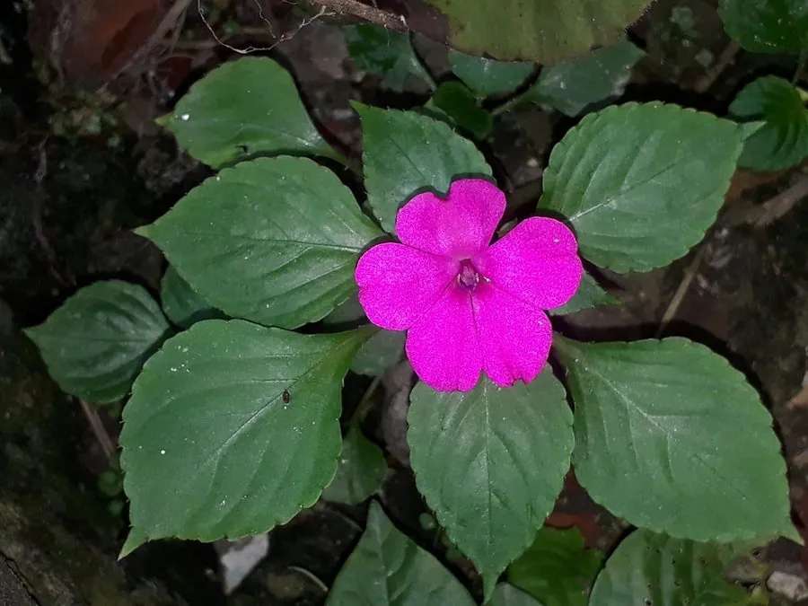

花卉与草本 · 植物界
非洲凤仙 Impatiens walleriana

凤仙花科凤仙花属多年生草本，花平展如蝶、色彩丰富，花期长且耐半阴，是花坛和窗台最常用的盆花之一。
- 分类
- 门被子植物门纲木兰纲目杜鹃花目科凤仙花科属凤仙花属
- 栖息环境
- 原产东非林下，栽培喜半阴湿润、忌暴晒
- 地理分布
- 原产东非坦桑尼亚、莫桑比克；中国各地广泛栽培
- 保护级别
- 暂无评估；栽培观赏植物，不涉及保护等级
物种志
非洲凤仙为凤仙花科凤仙花属多年生草本，常作一年生栽培，高二十至六十厘米，茎肉质、多汁，分枝多。叶片互生，卵形至披针形，边缘有锯齿，表面深绿。花单生或数朵生于叶腋，花冠扁平开展，花瓣五枚，后方一片较大并具距，颜色有红、粉、橙、白、紫等，花期五月至十月；蒴果椭圆形，成熟时轻轻一碰即弹裂，种子褐色，果期秋季。
非洲凤仙原产东非坦桑尼亚、莫桑比克一带，中国各地广泛栽培。它喜温暖湿润和半阴环境，忌强光暴晒和高温干旱，适宜疏松肥沃、排水良好的微酸性土壤，不耐寒。花大色艳、花期长，是花坛、花境、窗台和吊篮的常用材料；也可作地被。蒴果成熟后一触即裂，种子被弹射出去，因此英文称其为 Touch-me-not。
形态与习性
- 株高20–60 cm，茎肉质
- 花期5–10 月，花冠平展
- 果期秋季，蒴果触之即裂
- 光照喜半阴，忌强光暴晒
- 水分喜湿润，忌干旱积水
- 土壤疏松肥沃的微酸性土
- 主要用途花坛、窗台与吊篮盆栽
趣味知识
- 非洲凤仙成熟的蒴果一碰就炸开，把种子弹向四周，英文俗称别碰我。
- 它的茎肉多汁、半透明，因此又有玻璃翠的别称。
- 非洲凤仙耐半阴，在树荫和北向窗台也能持续开花。